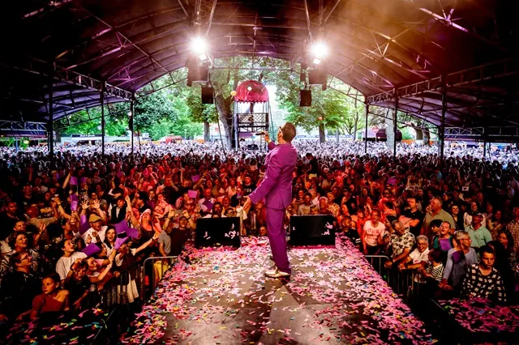
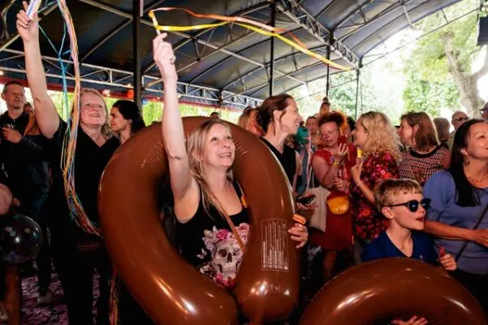

Nieuws ·
Dag van het levenslied

De grootste woonboot van Nijmegen
Op zondag 12 mei (Moederdag) vindt in Nijmegen De Dag van het Levenslied plaats, hét gratis smartlappenfestival met een knipoog. Om 18:00 betreedt bijvoorbeeld Stef Ekkel het podium. Hij is nationaal bekend geworden door zijn versie van “De Woonboot” waarbij zoveel mogelijk mensen samen op de grond gaan zitten en roeibewegingen maken. Natuurlijk is het dan een sport om die woonboot zo groot mogelijk te krijgen.
Zakdoekjes bij de dag van het levenslied
Er is geen enkel ander festival in Nijmegen waar alle vormen van emoties worden aangemoedigd. Huilen, nuilen, lachen, proesten, proosten en meezingen, het mag allemaal. Het levenslied gaat natuurlijk over alles wat het hart aangaat en dat mogen de bezoekers van het festival ook ervaren. Iedereen wordt meegesleept in een bomvol en vrolijk programma met een enorme diversiteit aan smartlap acts. Van stevige rocknummers tot de meest dramatische ballades of de bekendste klassiekers tot een aerobics act, alles komt voorbij. En natuurlijk is het allemaal met een vrolijke knipoog, want je moet soms zelfs de smartlap niet al te serieus nemen. Neem voor de zekerheid een zakdoekje mee, je weet nooit welke artiest jou ineens kan raken met zijn/haar gevoelige teksten. Het festival start dit jaar met een koor waarbij iedereen op het hoofdpodium mag komen en mag meezingen, hoe vals je ook zingt.
Zing, Nuil, Lach, Huil en Bewonder
Zing en lach dus mee met Nederlands meest bekende levensliederen en de Nijmeegse gastvrijheid! De vele acts maken deze Moederdag tot een waar feestje, waaronder De Triesto’s, Ronnie en de razende Ronda’s, Van Binsbergen trio, De Hema’s, Sher, Keessie B en Sjon en Sjakkelien. Sommige van deze acts zijn al bijna levensliedveteranen maar ook dit jaar zijn er weer een paar spiksplinternieuwe acts. Dus laat je verrassen. En over verrassingen gesproken, elk jaar sluit het festival af met een zeer grootse geheime act. Maar wie dat dit jaar is, wordt pas op het allerlaatste moment bekend gemaakt.

Kidspodium
Voor kinderen is er tussen 14:00 en 18:00 een speciaal programma bij het kidspodium. Er is bijvoorbeeld een heus hamsterrad voor kids, een springkussen en een stille disco. Dus terwijl de volwassenen genieten van een heerlijk koud drankje, worden de kinderen om de hoek vermaakt door een middagvullend programma.
Samen proosten op het goede doel
De Dag van het Levenslied steunt dit jaar weer een goed doel. Het festival wil graag haar steentje bijdragen en kiest een maatschappelijk goed doel waarbij het welzijn van groepen mensen voorop staat. Dit jaar is er gekozen voor De Liedjesfabriek. Een deel van de omzet zal dan ook gedoneerd worden aan dit doel. En om ook onnodig veel plastic muntjes weg te gooien, is er dit jaar ook gekozen om een pin-only event te houden.